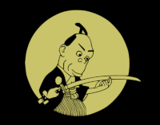

O primeiro anime quando foi feito ?

O primeiro anime que foi produzido no Japão, Namakura Gatana (Espada Cega), foi feito em algum momento de 1917, mas lá se discute qual título foi o primeiro a receber essa honra.
Este é um blog para você que já sabe e para você que esta começando a conhecer sobre este mundo de animes. Onde pessoas facinadas fazem até cosplay (fantasiar) de seus personagens favoritos. Este blog é para todos para você que não conhece seja bem vindo e para quem já conhece "OHAYO"
Anime ou animê (português brasileiro), se refere é uma animação desenhada à mão ou por computação gráfica do Japão. Fora do Japão e em inglês, anime refere-se à animação japonesa e refere-se especificamente à animação produzida no Japão
"Mangá" é o nome dado às histórias em quadrinhos japonesas. Ele possui características marcantes que o difere das demais revistas em quadrinhos, como a forma de leitura, publicação, diagramação e traços nos desenhos dos personagens.
O primeiro anime que foi produzido no Japão, Namakura Gatana (Espada Cega), foi feito em algum momento de 1917, mas lá se discute qual título foi o primeiro a receber essa honra.
No século XIX, o pintor Katsushika Hokusai publicou o primeiro encadernado com histórias desenhadas de forma sequencial. A série foi batizada de Hokusai Mangá e teve 15 volumes.Foi a partir da criação de Hokusai que os quadrinhos japoneses passaram a se chamar mangá. A palavra é uma junção de dois vocábulos: man, que significa involuntário, e gá, que significa desenho ou imagem.
No Brasil, os animes chegaram nos anos 60 e é difícil precisar qual foi o primeiro a ser exibido.
Na leva inicial vieram
Homem de Aço,
Oitavo Homem,
Ás do Espaço,
Zoran, O Garoto do Espaço,
e outros.Porém, o marco inicial, segundo estudiosos, é a exibição de National Kid em 1964. Logo depois, vieram:
A Princesa e o Cavaleiro,
Speed Racer,
Super Dínamo,
Sawamu, o demolidor,
Zillion,
O Menino Biônico,
Capitão Harlock e a Nave Arcádia,
Honey Honeye
As Aventuras do Pequeno Príncipe.
Contudo, eles ainda mantinham um público muito restrito e sem grande impacto.
O primeiro grande "boom" dos animes no país começou em 1994, com Os Cavaleiros do Zodíaco. O acordo de exibição era simples: a empresa forneceria 52 episódios de um desenho japonês que havia feito sucesso no Japão no meio da década de 1980 e estava ganhando fãs na Europa. Em troca, a Rede Manchete ofereceria espaços publicitários para a exibição de propagandas dos brinquedos relacionados à série. Porém, tão logo estreou, o sucesso foi tão grande que a emissora foi obrigada a comprar os direitos da obra. Os Cavaleiros do Zodíaco foi responsável não só por elevar a audiência da emissora, como foram também os responsáveis por outro meio midiático que conquistou crianças, adolescentes, jovens e alguns adultos, as revistas voltadas para a divulgação de animês, cinema, HQ, mangás entre outros produtos direcionados ao mundo dos heróis. Durante os dois primeiros anos de exibição manteve uma audiência média na casa dos 8 pontos, garantindo o segundo lugar isolado de audiência nas suas duas exibições diárias, sendo, assim, o responsável pela repopularização da grade da emissora.
Em 1999, Pokémon chegou nas telas brasileiras através da Rede Record, inaugurando todo um gênero e uma gama de imitadores e derivados. Sucesso de vendas, com dezenas de produtos licenciados, a série animada fez tanto sucesso que a então grande concorrente da Record, a Rede Globo, se viu forçada a buscar uma obra que pudesse competir com o sucesso de Pokémon. Chegava ao Brasil, assim, Digimon, anunciado pela própria Globo como uma obra similar a Pokémon. Além de Digimon, a Globo exibiu dentro da extinta TV Globinho, Yu-Gi-Oh!, Beyblade e Dragon Ball Z, que antes havia passado pelo SBT e pela Rede Bandeirantes. No dia 14 de agosto de 2000 a Bandeirantes colocou no ar o programa Band Kids, que exibia Dragon Ball Z, Bucky, Tenchi Muyo e El-Hazard (além de Cadillacs e Dinossauros, Os Seis Biônicos, Dragões Alados e O Mago, desenhos americanos que completavam a programação). Por cerca de 4 anos, ele foi o principal programa de animes na TV aberta, sendo assistido por milhares de assinantes de TV paga devido a sua qualidade e reexibição da saga de Freeza, considerada por muitos como a melhor de Dragon Ball Z. O programa fez sucesso pois ele trazia e retirava da grade aquilo que os fãs gostavam ou deixavam de gostar.
Porém, no início dos anos 2000, os animes perderam sua força e espaço na TV aberta, restando poucos ainda no ar, e em sua maioria em canais fechados. A grande crescente de serviços de streaming no mercado surgiu como um passo natural para as animações japonesas, e as plataformas, percebendo a sua popularidade, começaram a investir nelas. A Netflix teve um papel muito importante para que essas produções voltassem a ser populares como eram nos anos 90, visto que, quando a plataforma de streaming começou a se tornar conhecida no Brasil, ela já tinha em seu catálogo animes que hoje são muito conhecidos no país, como Death Note, Naruto, Bleach, One Piece, entre outros. Além disso, também temos o exemplo de Demon Slayer, que foi um animação lançada em 2019, eficou bem conhecida na região em 2021, ao ser adicionada à Netflix.